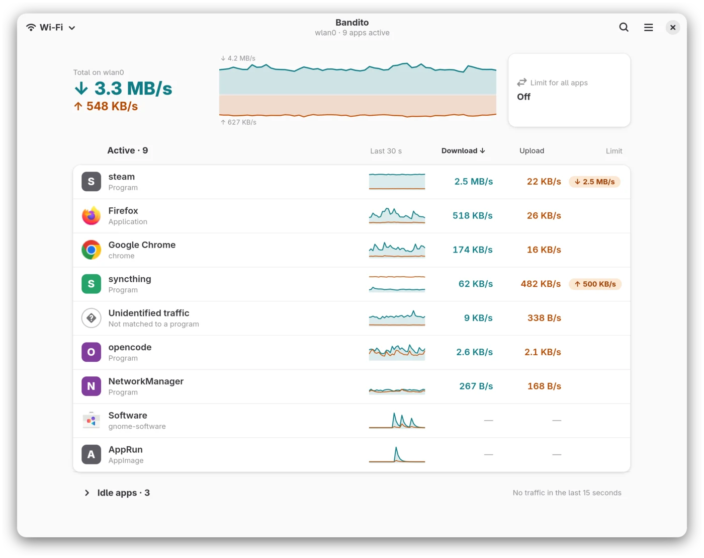
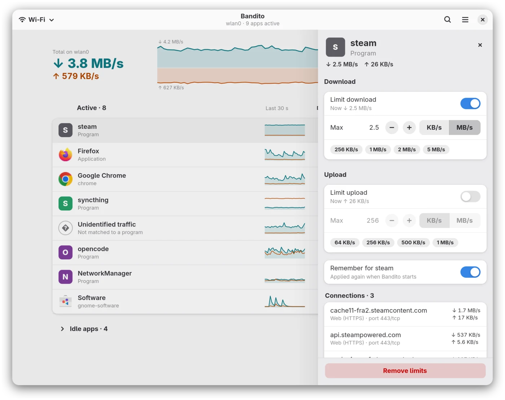
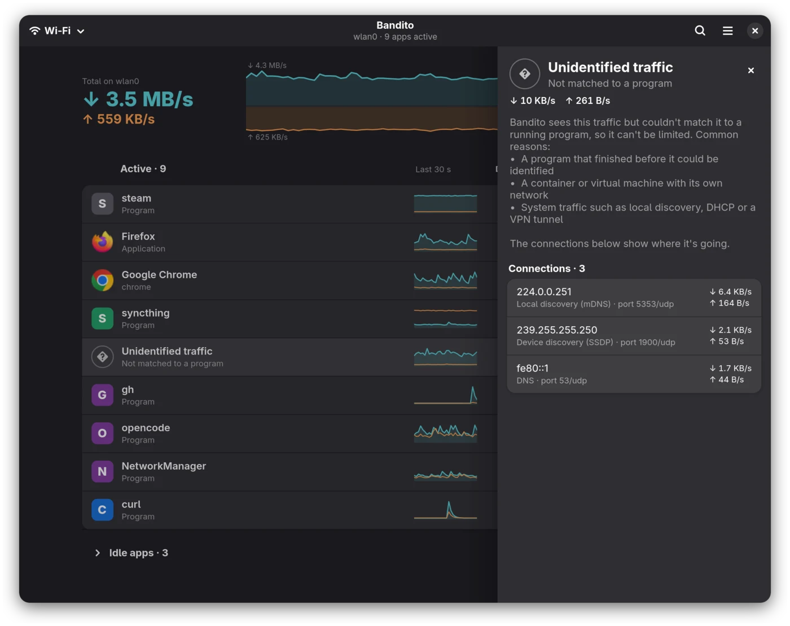

Linux
Decide how much
each app gets.
Bandito shows how much every app on your Linux computer downloads and uploads, and limits the ones that take too much.

See who is using it
Live download and upload for every app, with its real name and icon, and its last 30 seconds. Quiet apps fold away.
Limit any app
Download and upload separately, for one app or for all of them at once, over IPv4 and IPv6. Every change can be undone.
Set it once
Limits are remembered for each app, and applied again the next time Bandito starts.
See where it goes
Each app's panel lists the hosts it talked to in the last minute, with the service, port and rates.


Download
For Linux 5.12 or later, on Intel and AMD (x86_64) or 64-bit ARM (aarch64).
Linux
Binary
Needs GTK 4 and libadwaita, which GNOME desktops already have. Make it executable and run it:
chmod +x bandito-gtk-x86_64
./bandito-gtk-x86_64Flatpak
Brings its own GTK. The GNOME runtime it uses comes from Flathub.
flatpak install --user bandito-gtk-x86_64.flatpakOn 64-bit ARM, use aarch64 in place of x86_64.
How it works
Bandito measures and limits traffic with netleash, a small helper that counts each app's packets inside the Linux kernel, with eBPF. It leaves nothing running: when Bandito closes, the limits are lifted until you open it again.
Why it asks for your password
Seeing and limiting other apps' traffic takes administrator access. Bandito downloads one exact version of netleash and checks it, and checks it again as root before each run, so a changed file is never run. Only netleash runs as root: the window doesn't.
To skip the password, install netleash yourself and give it only the rights it needs, once:
cargo install netleash
sudo setcap cap_bpf,cap_net_admin,cap_perfmon+ep ~/.cargo/bin/netleashGood to know
- It watches one network at a time: you pick it on first run and switch from the header bar.
- Some traffic can't be matched to a program (containers, VPN tunnels, the system's own). It is shown with its connections, but can't be limited.
- Downloads are limited by dropping what is over the limit, so senders slow down; uploads are paced instead.